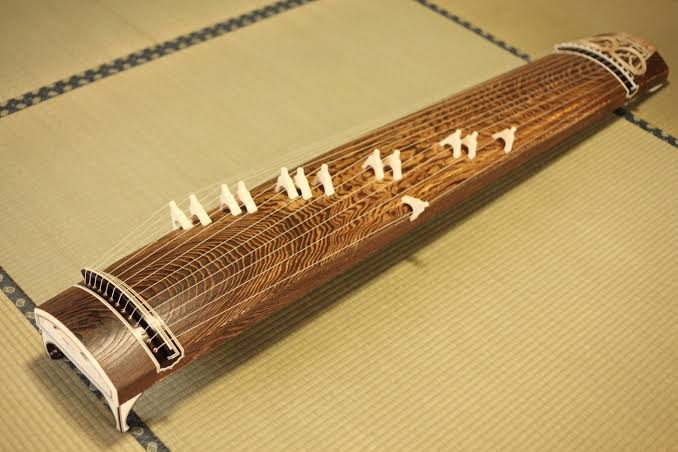
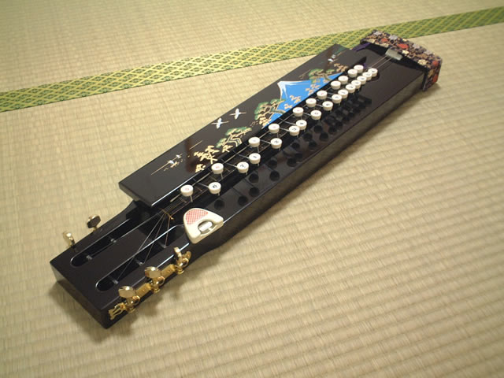
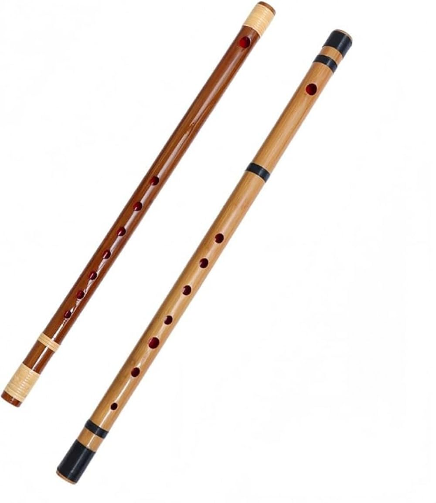
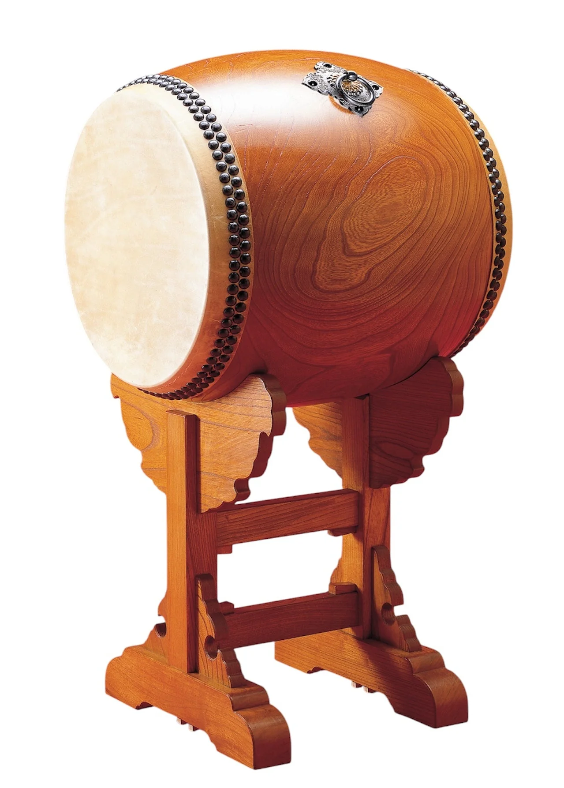

写真を掲載予定
演奏活動
グループホームでの演奏
地域のグループホームを訪問し、琴や尺八などの音色で、ご利用者の皆さまと楽しいひとときを過ごしました。
About
和の響は、琴、大正琴、尺八、篠笛、パーカッションなど、日本の伝統楽器を中心に演奏活動を行っている音楽グループです。
地域の皆さまに、日本の伝統的な音色を身近に楽しんでいただけるよう、グループホームや地域イベントなどで演奏しています。落ち着いた和の響きが、会場にやさしい時間をお届けできれば幸いです。
Activities
施設や地域の場で、和の音色をお届けしています。
写真を掲載予定
演奏活動
地域のグループホームを訪問し、琴や尺八などの音色で、ご利用者の皆さまと楽しいひとときを過ごしました。
写真を掲載予定
地域イベント
第21回野田市ふれあいハートまつりにて演奏を行い、訪れた皆さまに日本の伝統楽器の響きをお届けしました。
写真を掲載予定
演奏活動
野田市産業祭にて演奏を行い、訪れた皆さまに日本の伝統楽器の響きをお届けしました。
Instruments
日本の伝統楽器を中心に、温かみのある合奏をお届けします。

写真を掲載予定
十三弦の箏。澄んだ高音から深い低音まで、心をほどくような広がりのある響きが特長です。

写真を掲載予定
親しみやすい音色の撥弦楽器。旋律をやさしく支え、聴く人の記憶に残るメロディを奏でます。

写真を掲載予定
竹の縦笛。息づかいがそのまま音になる、奥行きのある響きで、場の空気をそっと整えます。

写真を掲載予定
祭や民謡でも親しまれる横笛。明るく通りのよい音色が、合奏に彩りを添えます。

写真を掲載予定
太鼓などの打楽器。穏やかなリズムで演奏を支え、会場に温かみと一体感をもたらします。
Practice
毎月第2日曜日と第4日曜日に活動しています。
カレンダーの金色の日が、活動日の目安です。
Contact
和の響では、地域のイベントや施設などでの演奏依頼を承っています。
琴、大正琴、尺八、篠笛、パーカッションなどによる、和の音色をお届けします。
演奏についてのお問い合わせは、お気軽にご連絡ください。
電話： 090-7292-0171
メール： miyoshid23@nifty.com